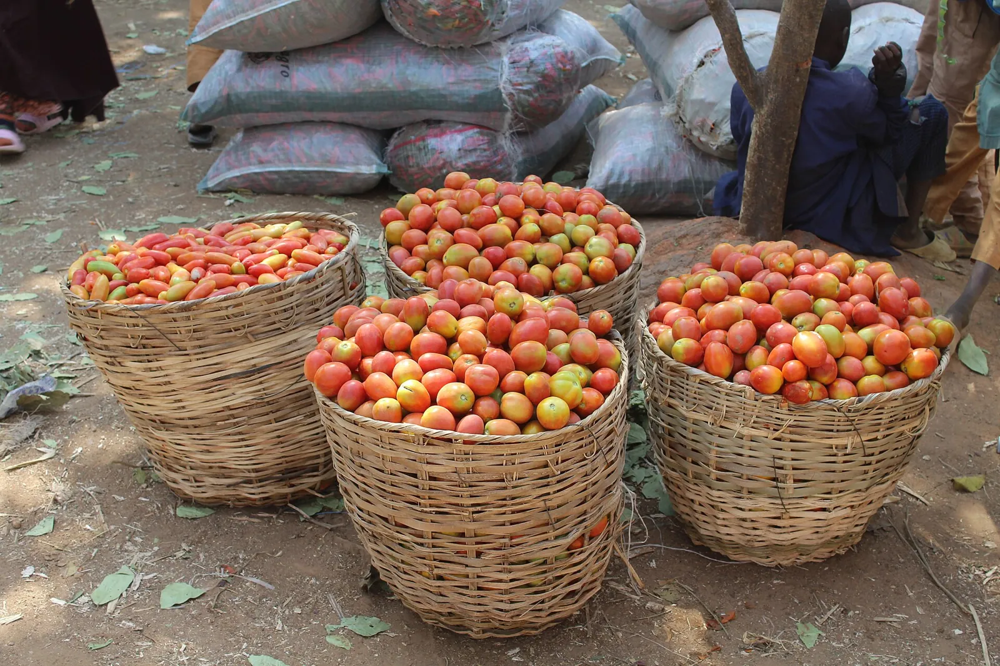

Plants
109 species, grouped by botanical family — which is the grouping that matters, because rotation rules fire on family, not on crop.
A few to know


Each links to its own page, where the photo is credited. The full list — all 109 — is below, by family.
Actinidiaceae (Actinidiaceae)
- Hardy Kiwi Actinidia arguta · also kiwiberry
Adoxaceae (Adoxaceae)
- Elderberry Sambucus canadensis · also American elderberry
Amaranth Family (Amaranthaceae)
- Amaranth Amaranthus cruentus
- Beet Beta vulgaris · also beetroot, Swiss chard, chard
- Spinach Spinacia oleracea
Asparagaceae (Asparagaceae)
- Asparagus Asparagus officinalis
Borage Family (Boraginaceae)
- Borage Borago officinalis · also starflower
- Lacy Phacelia Phacelia tanacetifolia
- Russian Comfrey Symphytum x uplandicum
Brassicas (Brassicaceae)
- Arugula Eruca sativa · also rocket, roquette
- Cabbage Brassica oleracea · also broccoli, kale, cauliflower, brussels sprouts, kohlrabi, collards
- Horseradish Armoracia rusticana
- Mustard Greens Brassica juncea · also mustard
- Radish Raphanus sativus
- Rutabaga Brassica napus · also swede
- Sweet Alyssum Lobularia maritima
- Turnip Brassica rapa · also bok choy, napa cabbage
Caprifoliaceae (Caprifoliaceae)
- Honeyberry Lonicera caerulea · also haskap
Carrot Family (Apiaceae)
- Carrot Daucus carota · also Nantes carrot, Danvers carrot, Chantenay carrot, Imperator carrot
- Celery Apium graveolens · also celeriac
- Cilantro Coriandrum sativum · also coriander
- Dill Anethum graveolens
- Fennel Foeniculum vulgare
- Lovage Levisticum officinale
- Parsley Petroselinum crispum
- Parsnip Pastinaca sativa
Cucurbits (Cucurbitaceae)
- Butternut Cucurbita moschata · also winter squash
- Cucumber Cucumis sativus · also vining cucumber, bush cucumber
- Melon Cucumis melo · also cantaloupe, muskmelon
- Summer Squash Cucurbita pepo · also zucchini, acorn squash, bush squash, vining squash, pumpkin
- Watermelon Citrullus lanatus
- Winter Squash Cucurbita maxima · also hubbard, kabocha, buttercup, buttercup / kabocha, giant / show pumpkin
Daisy Family (Asteraceae)
- Artichoke Cynara cardunculus · also globe artichoke
- Calendula Calendula officinalis · also pot marigold
- Chamomile Chamaemelum nobile · also Roman chamomile
- Cosmos Cosmos bipinnatus · also garden cosmos
- Endive Cichorium endivia · also escarole, frisee
- French Marigold Tagetes patula
- French Tarragon Artemisia dracunculus
- Lettuce Lactuca sativa · also leaf lettuce, butterhead (Bibb / Boston), romaine (cos), crisphead (iceberg)
- Purple Coneflower Echinacea purpurea · also echinacea
- Sunflower Helianthus annuus · also giant single-stem sunflower, dwarf or branching sunflower
- Yarrow Achillea millefolium
- Zinnia Zinnia elegans · also common zinnia
Ebenaceae (Ebenaceae)
- American Persimmon Diospyros virginiana · also persimmon
Ericaceae (Ericaceae)
- Blueberry Vaccinium corymbosum · also highbush blueberry
Grasses (Poaceae)
- Cereal Rye Secale cereale · also winter rye
- Corn Zea mays · also maize, sweet corn, supersweet corn, popcorn, ornamental corn
- Oats Avena sativa
- Sorghum Sorghum bicolor · also grain sorghum, broomcorn, milo
Grossulariaceae (Grossulariaceae)
- Currant Ribes spp. · also gooseberry, Red currant, Black currant
Iridaceae (Iridaceae)
- Crocus Crocus spp. · also Dutch crocus
Legumes (Fabaceae)
- Common Bean Phaseolus vulgaris · also pole bean, bush bean
- Cowpea Vigna unguiculata · also black-eyed pea, southern pea, vining cowpea, bush cowpea
- Crimson Clover Trifolium incarnatum
- Edamame Glycine max · also vegetable soybean, soybean
- False Indigo Bush Amorpha fruticosa
- Fava Bean Vicia faba · also broad bean, tall fava, dwarf fava
- Hairy Vetch Vicia villosa
- Lima Bean Phaseolus lunatus · also butter bean, bush lima, pole lima
- Pea Pisum sativum · also bush pea, climbing pea
- Runner Bean Phaseolus coccineus · also scarlet runner bean, climbing runner bean, dwarf runner bean
- White Clover Trifolium repens
- Wild Lupine Lupinus perennis
Mallow Family (Malvaceae)
- Okra Abelmoschus esculentus · also standard okra, dwarf okra
Mint Family (Lamiaceae)
- Anise Hyssop Agastache foeniculum
- Basil Ocimum basilicum
- Lavender Lavandula angustifolia · also English lavender
- Lemon Balm Melissa officinalis
- Marjoram Origanum majorana · also sweet marjoram
- Oregano Origanum vulgare
- Rosemary Rosmarinus officinalis
- Sage Salvia officinalis
- Spearmint Mentha spicata · also mint
- Summer Savory Satureja hortensis
- Thyme Thymus vulgaris
Moraceae (Moraceae)
- Fig Ficus carica
- Red Mulberry Morus rubra · also mulberry
Morning-Glory Family (Convolvulaceae)
- Sweet Potato Ipomoea batatas
Nightshades (Solanaceae)
- Eggplant Solanum melongena · also globe eggplant (standard / American), Italian eggplant (oval), Asian eggplant (long / slender), patio eggplant (dwarf)
- Pepper Capsicum annuum · also chile, jalapeno, bell pepper, hot pepper
- Potato Solanum tuberosum · also first early potato (new potatoes), second early potato, maincrop potato (storage)
- Tomatillo Physalis philadelphica
- Tomato Solanum lycopersicum · also bush tomato, vining tomato
Oleaster Family (Elaeagnaceae)
- Autumn Olive Elaeagnus umbellata
Onion Family (Amaryllidaceae)
- Chives Allium schoenoprasum
- Daffodil Narcissus spp.
- Garlic Allium sativum · also hardneck garlic, softneck garlic
- Leek Allium ampeloprasum
- Onion Allium cepa · also shallot
- Scallion Allium fistulosum · also green onion, bunching onion
Polygonaceae (Polygonaceae)
- Buckwheat Fagopyrum esculentum
- Rhubarb Rheum rhabarbarum
- Sorrel Rumex scutatus · also French sorrel, garden sorrel
Rose Family (Rosaceae)
- Apple Malus domestica · also standard apple, dwarf apple
- Apricot Prunus armeniaca
- Black Chokeberry Aronia melanocarpa · also aronia
- Blackberry Rubus fruticosus
- Peach Prunus persica · also nectarine, standard peach, genetic dwarf peach
- Pear Pyrus communis · also European pear
- Plum Prunus domestica · also European plum, standard plum, dwarf plum
- Quince Cydonia oblonga
- Red Raspberry Rubus idaeus
- Sour Cherry Prunus cerasus · also tart cherry
- Strawberry Fragaria x ananassa
- Sweet Cherry Prunus avium
Spiderflower Family (Cleomaceae)
- Rocky Mountain Bee Plant Cleome serrulata
Tropaeolaceae (Tropaeolaceae)
- Nasturtium Tropaeolum majus
Vitaceae (Vitaceae)
- Grape Vitis spp. · also American grape, European grape